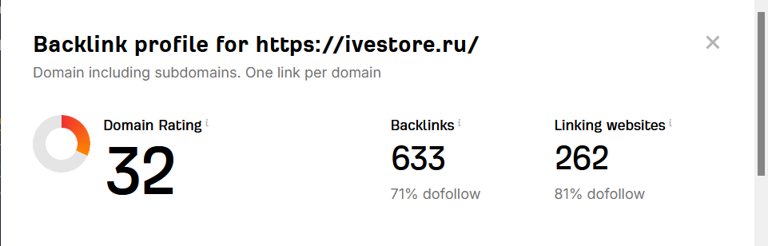
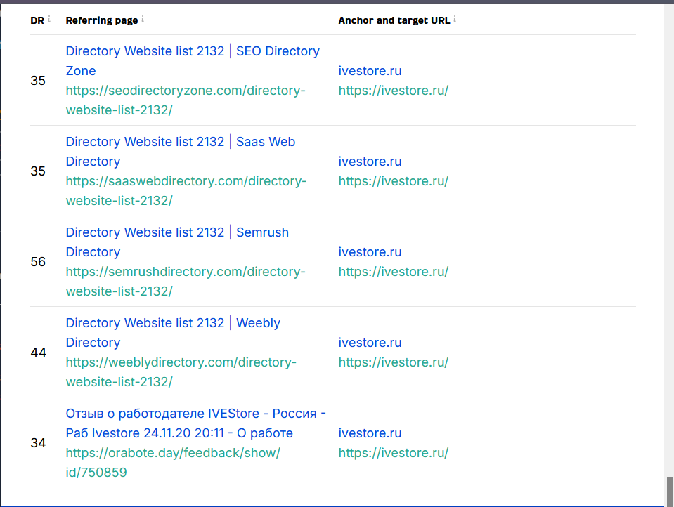
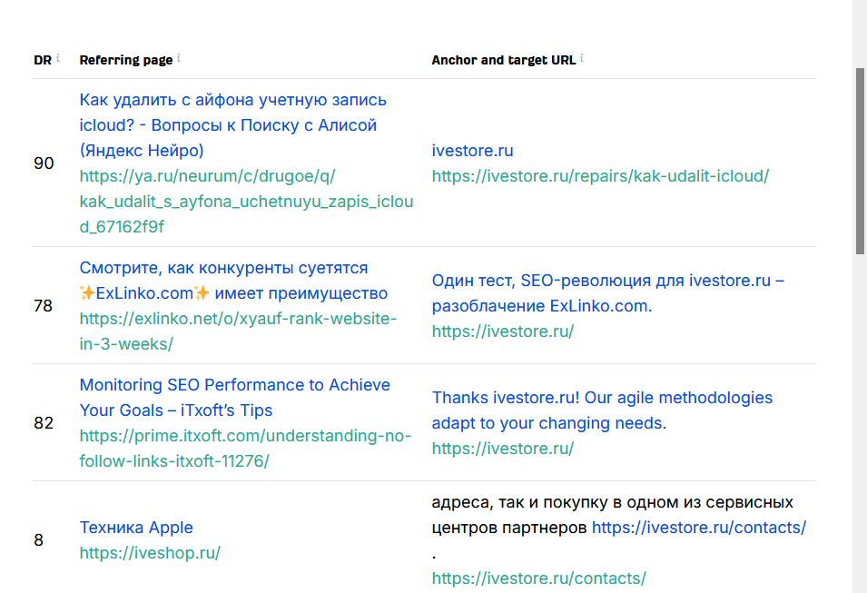
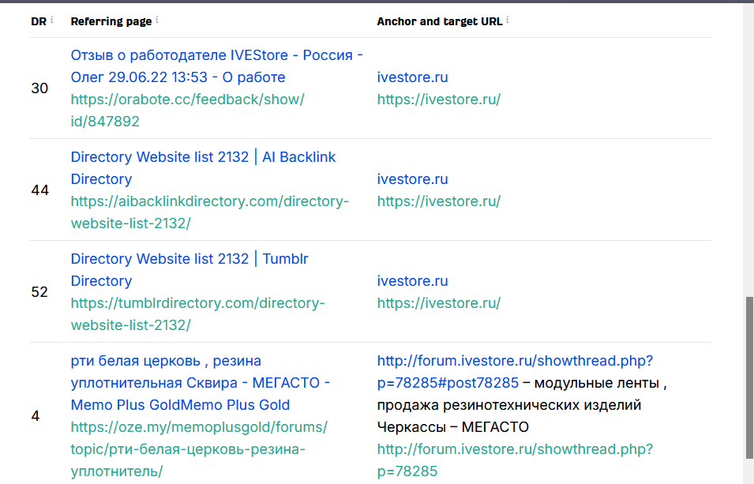

Анализ ссылочного профиля интернет-магазина ivestore.ru
Введение
Для анализа ссылочного профиля поступил интернет-магазин ivestore.ru.
Задача: Провести аудит и дать рекомендации, как повысить «вес» сайта и начать получать дополнительный трафик.
Анализ ссылочного профиля ivestore.ru
Текущая ситуация
Ссылочный профиль сайта является низкокачественным. Он состоит в основном из массовых покупных ссылок. Из 262 ссылающихся доменов преобладают тематические каталоги и сайты-отзовиков.
Наблюдается большое количество брендовых анкоров (ivestore.ru), размещенных неестественным образом, а также присутствует чистый спам (анкоры про «резинотехнические изделия»). Естественных тематических ссылок крайне мало.
Вывод: Такой профиль является частой причиной низкого трафика и может привести к санкциям со стороны поисковых систем.
Визуальный анализ ссылочного профиля




Предложения по улучшению стратегии
- Прекратить покупку ссылок на биржах и в каталогах. Массовые покупные ссылки не дают долгосрочного эффекта и создают риски санкций.
- Добавить сайт в авторитетные справочники: Яндекс.Справочник, Google Мой бизнес, 2GIS. Это даст качественные ссылки и улучшит локальное SEO.
- Найти партнеров среди блогеров, пишущих о технике, и предложить им сотрудничество. Естественные упоминания в блогах и обзорах принесут тематический вес.
- Создать полезный контент (например, инструкции по ремонту, видео), на который другие сайты будут ссылаться сами. Это естественный и самый эффективный способ наращивания ссылочной массы.
Ожидаемые результаты
При выполнении рекомендаций можно ожидать:
- Очистку ссылочного профиля — постепенное замедление негативных факторов
- Рост органического трафика — за счет естественных ссылок и улучшения поведенческих факторов
- Снижение рисков санкций — отказ от покупных ссылок уберет «красные флаги» для поисковых систем
- Долгосрочный эффект — качественный контент будет привлекать ссылки годами